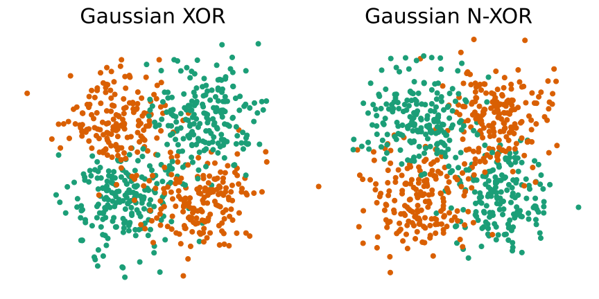

<!-- TODO add slide numbers & maybe slide name --> ### Transmedia progressive learning [JHU](https://www.jhu.edu/): Hayden Helm | Jayanta Dey | Ronak Mehta | Will LeVine | Carey E. Priebe | Joshua T. Vogelstein <br> [Microsoft Research](https://www.microsoft.com/en-us/research/): Weiwei Yang | Jonathan Larson | Bryan Tower | Chris White  --- ### Outline - [Learning](#learn) - [Ensembling](#rep) - [Experiments](#exp) - [Theory](#theory) - [Brains](#neuro) - [Discussion](#disc) --- name:learn ### Outline - Learning - [Ensembling](#rep) - [Experiments](#exp) - [Theory](#theory) - [Brains](#neuro) - [Discussion](#disc) --- ### What is Learning? .ye[$f$] learns .ye[task] $t$ from .ye[data] $\mathbf{Z}_n$ when its .ye[performance] improves due to $\mathbf{Z}_n$, i.e., when .center[$LE_n(f) = \frac{\mathcal{E}_n(f)}{\mathcal{E}_0(f)} > 1$.] $\mathcal{E}_0(f)$ is the algorithm's performance prior to seeing $n$ new samples. --- <!-- \mathbb{E}\left[\frac{R(f(\bold{Z}_n))}{R(f(\bold{Z}_0))}\right] = \frac{\mathbb{E}[R(f(\bold{Z}_n))]}{R(f(\bold{Z}_0))} --> ### What are the data? The data are determined by physical implementation of the system: - .ye[Sample space]: $\mathcal{Z}$, determined by available sensors - e.g., images, text, vectors, networks - .ye[Action space]: $\mathcal{A}$, determined by available actuators - e.g., {→, ←, ↑, ↓, A,B}, {reject, fail to reject}, $\mathbb{R}$ - .ye[Query space]: $\mathcal{Q}$, determined by system's "interface" - e.g., in which cluster is $z$? what is this object? Classification Example - $z_i = (x_i,y_i)$ where $\mathcal{X}=\mathbb{R}^p$ and $\mathcal{Y}=\lbrace 0,1\rbrace$ - $a_i \in \lbrace 0, 1 \rbrace = \mathcal{Y}$ are class labels - $q_i \in \mathcal{X}=\mathbb{R}^p$ are possible feature vectors with unknown class labels --- ### What are the Assumptions? The assumptions are determined by the subject matter expert, though they can be quite general: - The data, $\bold{Z}\_n = \{Z\_1,\ldots, Z\_n\}\ , Z\_i \in \mathcal{Z}^n$ for $i \in [n]$, is such that each $Z\_i$ is sampled from some true but unknown distribution $P\_{Z} \in \, \mathcal{P}$ - A query, $q \in \mathcal{Q}$ is sampled from some true but unknown distribution $P_Q \in \, \mathcal{P}_Q$ - An optimal action , $a \in \mathcal{A}$ given $q$, is sampled from some true but unknown distribution $P\_{A \mid Q} \in \, \mathcal{P}_{A \mid Q}$ Let $P\ = P\_{Z} \otimes P\_{A | Q} \otimes P\_Q \in \, \mathcal{P}$ denote the joint distribution over samples, queries, and optimal actions. $\mathcal{P}$ is called the .ye[statistical model]. --- ### What is $f$? We get to choose this, though we must respect the resource constraints defined by the setting: - $h : \mathcal{Q} \rightarrow \mathcal{A}$, a .ye[hypothesis] takes an action on the basis of a query - $\mathcal{D} = \bigcup_{n = 1}^{\infty}\mathcal{Z}^n$, a .ye[data corpus] - $f: \mathcal{D} \to \mathcal{H}$, a learning .ye[algorithm] maps data sets from $\mathcal{Z}$ to a hypothesis $h \in \mathcal{H}$ Supervised machine learning example - $h$ is *RandomForestClassifier.predict* - $\mathcal{D}_n = (X_1, Y_1), \ldots, (X_n, Y_n)$ - $f$ is *RandomForestClassifier.fit* --- ### What is Performance? - .ye[Loss], e.g., 0-1 loss: $ \ell(a, a') := \mathbb{I}[a \neq a']. $ - .ye[Risk] e.g., expected loss: $ R(h) := \ \mathbb{E}\_{Q, A}[\ell(h(Q), A)]. $ - With an algorithm, the risk is $$ R(f(\bold{Z}_n)). $$ - Expected risk, otherwise known as .ye[generalization error] or .ye[performance], $$ \mathcal{E}_n(f) := \mathbb{E}[R(f(\bold{Z}_n))]. $$ - .ye[Learning efficiency], is the ratio of generalization errors $$ LE_n(f) := \mathbb{E}\left[\frac{R(f(\bold{Z}_n))}{R(f(\bold{Z}_0))}\right]. $$ <!-- $$ LE_n(f) := \mathbb{E}\left[\frac{R(f(\bold{Z}_n))}{R(f(\bold{Z}_0))}\right] = \frac{\mathcal{E}_n(f)}{\mathcal{E}_0(f)}. $$ --> --- ### What are Constraints? | Constraint | Example | | :--- | :--- | interpretability | hyperplanes or sparse | complexity | $\mathcal{O}(n)$ | memory | $< 1$ gigabyte of memory for a given dataset | time | $< 1$ sec on a specific hardware configuration for a given dataset | scalability| must operate on distributed storage/compute | power | $< 1$ watt on a given system for a given dataset | price | $< 1$ USD on a given system for a given dataset | hardware | must run on iPhone X --- ### What is the Setting? The setting $s$ is the tuple of everything aside from the true but unknown distribution: <!-- $\mathcal{S}=(\mathcal{Z}, \mathcal{A}, \mathcal{Q}, \mathcal{P}, \mathcal{H}, \mathcal{F}, \mathcal{E}, \mathcal{C})$ --> <!-- A setting is defined by a septuple $\mathcal{S} = \lbrace \mathcal{Z}, \mathcal{A}, \mathcal{L}, \mathcal{R}, \mathcal{P}, \mathcal{H}, \mathcal{F} \rbrace$ --> | Object | Notation | Example |:--- |:--- |:--- | | Query space | $\mathcal{Q}$ | any tweet | Action space | $\mathcal{A}$ | {↑,↓,←, →,B,A,start} | Sample space | $ \mathcal{Z}$ | $\mathbb{R}^p \times \lbrace 0, 1 \rbrace$ | | Statistical model | $\mathcal{P} := \lbrace P \rbrace$ | Gaussian | Hypothesis Class | $\mathcal{H} = \lbrace h: \mathcal{Q} \to \mathcal{A} \rbrace$ | hyperplanes | Risk | $R: \mathcal{H} \times \mathcal{P} \to \mathbb{R}_{\geq}$ | expected loss | Algorithm Class | $\mathcal{F} = \lbrace f : \mathcal{D} \to \mathcal{H} \rbrace$ | *RandomForest.fit* <!-- | Performance | $LE\_n : \mathcal{F} \times \mathcal{R} \times \mathcal{P} \to \mathbb{R}$ | avg expected loss --> <!-- | Constraints | $\mathcal{R}: \mathcal{P} \times \mathcal{L} \to \mathbb{R}_+$ | $\mathcal{O}(n)$ --> --- ### What is the learning task? <!-- - $t$ is the task, $(s, P)$. --> - $P$ is the joint distribution, $P = P\_Z \otimes P\_{A|Q} \otimes P\_{Q} \in \mathcal{P}$ - $s$ is the setting, $s = (\mathcal{S},\mathcal{A},\mathcal{Z},\mathcal{P},\mathcal{H},R,\mathcal{F})$. In setting $s$ with true but unknown distribution $P$, given data $\mathbf{Z}_n$ find $f$ that optimizes performance $$f^*\_n = \arg \min\_{f \in \mathcal{F}} \, \mathcal{E}_n(f).$$ --- ### Has $f$ Learned? .ye[$f$] learns .ye[task] $t$ from .ye[data] $\mathbf{Z}_n$ when its .ye[performance] improves due to $\mathbf{Z}_n$, i.e., when .center[$LE_n(f) = \frac{\mathcal{E}_n(f)}{\mathcal{E}_0(f)} > 1$.] $\mathcal{E}_0(f)$ is the algorithm's performance prior to seeing $n$ new samples, and therefore a function of - priors - inductive bias of $\mathcal{H}$ <!-- - estimation bias of $f$ --> - model bias of $\mathcal{P}$ - pre-training --- ### What is Transfer Learning? - Given - Side information $\bold{W}_{n_0} = (W_i)_1^{n_0}$ - $W_i$ is observed in $\mathcal{W}$, and sampled from $P_0$ - Used to help learn for the learning task <!-- - Learning task $t = (s, P_0,P_1)$, $n_1$ samples --> - Define - Sample space: $\mathcal{Z}^\prime = (\mathcal{Z} \cup \mathcal{W},\lbrace 0,1 \rbrace)$ - Model: $\mathcal{P}^\prime = \lbrace P' = P_{\mathbf{Z},Q,A} \otimes P_W \in \mathcal{P}'\rbrace$ - Data set space: $\mathcal{D}^\prime = \bigcup_{n = 1}^{\infty}(\mathcal{Z}^\prime)^n$ - Algorithm class: $\mathcal{F}^\prime = \lbrace f : \mathcal{D}^\prime \to \mathcal{H} \rbrace$ - Transfer setting is $s' = (\mathcal{Q}, \mathcal{A}, \mathcal{Z}^\prime, \mathcal{P}^\prime, \mathcal{H}, \mathcal{R}, \mathcal{F}^\prime)$ - Transfer task: in setting $s'$ with true but unknown distribution $P'$, given data $\mathbf{D}\_n = (\mathbf{Z}\_n,\mathbf{W}\_n)$, find $f$ that optimizes performance $$f^*\_n = \arg \min\_{f \in \mathcal{F}} \, \mathcal{E}_n(f).$$ --- ### Has $f$ Transfer Learned? $f$ .ye[transfer learns] task $t$ from data $\mathbf{Z}_0$ when its performance improves due to $\mathbf{Z}_0$, i.e., when .center[$LE\_{n\_0, n\_1}(f) = \mathbb{E}\left[\frac{R(f(\bold{Z}\_{n\_1}))}{R(f(\bold{Z}\_{n\_0, n\_1}))}\right]$ .] --- ### What is Multitask Learning? - Given - Environment of $T < \infty$ tasks: $\color{yellow}{[T]}=\lbrace t_1, \ldots t_T \rbrace$ - A label $\color{yellow}{t_i} \in [T]$ which indicates $i$'s setting $s_i$ - Sample space: $\mathcal{Z}' \leftarrow (\bigcup_{i = 1}^{T}\mathcal{Z}_i,\color{yellow}{[T]})$ - Assume a statistical model: $\mathcal{P}\_n = \lbrace P' := P\_{\bold{Z}^n, Q, A | \bold{T}^n} \color{yellow}{\times P\_{\bold{T}^n}} \rbrace$, where <!-- can't render correctly --> - $(T\_1,\ldots, T\_n) \sim P\_{\bold{T}^n}$, iid - $Z\_i | T\_i \sim P\_{Z|T}$, iid - $\bold{D}^n = ((T\_i,Z\_i))\_1^{n} \in \mathcal{D}'$ - Define a multitask learning algorithm $f$ as $ \mathcal{F} = \lbrace f : \mathcal{D}' \rightarrow \mathcal{H}^T \rbrace$ - Multitask: in setting $s'$ with true but unknown distribution $P'$, given data $\mathbf{D}\_n$, find $f$ that optimizes performance $$f^*\_n = \arg \min\_{f \in \mathcal{F}} \, \mathcal{E}_n(f).$$ --- ### Has $f$ Multitask Learned? $f$ .ye[weakly multitask] learns task $t$ from data $\mathbf{Z} = \mathbf{Z}_0, \mathbf{Z}_1, \ldots \mathbf{Z}_T$ when its .ye[average] performance $\lbrace \mathcal{E}_t \rbrace$ improves due to other task's data, i.e., when $$ \sum\_{t \in [T]} \mathcal{E}\_t(f\_n ) P(t) < \sum\_{t \in [T]} \mathcal{E}\_t(f\_n^t) P(t),$$ <br> $f$ .ye[strongly multitask] learns task $t$ from data $\mathbf{Z}$ when .ye[each] performance $\lbrace \mathcal{E}_t \rbrace$ improves due to other task's data: $$ \mathcal{E}\_t(f_n) < \, \mathcal{E}\_t(f_n^t) \quad \forall t \in [T].$$ --- ### Transfer Efficiency (TE) The transfer efficiency of learning algorithm $f$ for task $t$ and sample size $n$ is $$ TE\_t(f) := \mathbb{E}\left[{\frac{R^t(f(\mathcal{D}^t\_n))}{R^t(f(\mathcal{D}\_n))}}\right] $$ Where $D_n^t$ are the samples in $D_n$ from task $t$. <br> Algorithm $ f $ transfer learns if $ TE_t(f) > 1 $. --- ### Forward/Backward TE - Let $n\_t = \max \lbrace i \in [n] : T\_i = t \rbrace \leq n$ be the index of the last occurence of task $t$ in $D\_n$. - Let $D\_n^{< t} = \lbrace (Z\_i, T\_i)\_{i = 1}^{n\_t} \rbrace $. - .ye[Forward] transfer efficiency is the improvement on task $t$ resulting from all data .ye[preceding] task $t$ $$ FTE\_t(f) := \mathbb{E}\left[ \frac{R^t(f(\mathbf{D}^{t}\_n))}{R^t(f(\mathbf{D}^{< t}\_n))} \right]. $$ -- - .ye[Backward] transfer efficiency is the improvement on task $t$ resulting from all data .ye[after] task $t$ <!-- The backward transfer efficiency of $ f $ for task $t$ is --> $$ BTE\_t(f) := \mathbb{E}\left[ \frac{R^t(f(\mathbf{D}^{< t}\_n))}{R^t(f(\mathbf{D}\_n))} \right]. $$ $$ --- ### TE Factorizes $TE\_t(f) :=$ $$\mathbb{E}\left[{\frac{R^t(f(\mathbf{D}^t\_n))}{R^t(f(\mathbf{D}\_n))}}\right] = \mathbb{E}\left[ \frac{R^t(f(\mathbf{D}^{t}\_n))}{R^t(f(\mathbf{D}^{< t}\_n))} \right] \times \mathbb{E}\left[ \frac{R^t(f(\mathbf{D}^{< t}\_n))}{R^t(f(\mathbf{D}\_n))} \right] $$ <br> We therefore have a single metric to quantify transfer. --- ## What is Lifelong Learning? - Given - Environment of $T < \infty$ tasks: $\color{yellow}{[T]}=\lbrace t_1, \ldots t_T \rbrace$ - Query and action spaces $\mathcal{Q}$ and $\mathcal{A}$ - Curriculum of tasks $C$, which is a time series of tasks $(T\_i)_{i = 1}^{\infty}$, with $T\_i \in T$, with possible serial dependence, as well as dependence on the query and action - Hypothesis class $\mathcal{H} = \lbrace h: \mathcal{Q} \to \mathcal{A}\rbrace$ - Risk class $\mathcal{R} = \lbrace R: \mathcal{H} \times \mathcal{P}\_{Q, A} \to \mathbb{R}\_{\geq 0}\rbrace$ - Define - .ye[Sample space]: $\mathcal{Z} = (\bigcup_{i = 1}^{T}\mathcal{Z}_i,\color{yellow}{[T]})$ - .ye[Lifelong algorithm class]: $\mathcal{F} = \lbrace (f\_n)_{n = 1}^{\infty} | f\_n: \mathcal{Z}^n \to \mathcal{H} \rbrace$ - Assume a statistical model $\mathcal{P} = \lbrace P := P\_{Z, Q, A, T, T_n} \rbrace$ - $T$ is the current task in the curriculum and $T_n$ is the next task - $Z\_i | T\_i \sim P\_{Z|T}$, iid - Lifelong setting space $\mathcal{S} = (\mathcal{Q}, \mathcal{A}, \mathcal{Z}, \mathcal{P}, \mathcal{R}, \mathcal{F} \rbrace)$ --- ## What is Lifelong Learning? Given lifelong setting $s$ and distribution $P$, the lifelong task is to find $f^*$ such that $$f^* = \arg \min\_{f \in \mathcal{F}}\lim\inf_{n\to\infty}\mathcal{E}\_n(f\_n)$$ --- ## Has $f$ Lifelong Learned? Given lifelong setting $s$, distribution $P$, and $n$ samples, we say lifelong algorithm $f$ learns if $$\mathbb{E}\big[\frac{R^t(f_n(D_n^t))}{R^t(f_n(D_n))}\big] > 1$$ Where $D\_n = (Z\_i, T\_i)_{i = 1}^{n}$ --- ### Lifelong Learning Taxonomy  --- ### Ways Tasks can Differ | Component | Notation | Examples | | :--- | :--- | :--- | Query Space | $\mathcal{Q}$ | new keyboard introduced | Action Space | $\mathcal{A}$ | class incremental, task incremental | Sample Space | $\mathcal{Z}$ | another modality | Statistical Model | $\mathcal{P}$ | Gaussian to Log-Gaussian | Hypotheses | $\mathcal{H}$ | linear functions | Risk | $R$ | expected loss | Algorithm Space | $\mathcal{F}$ | SVM | Distribution | $P$ | mean shift | Task Awareness | $T_i$ | {aware, oblivious, ambivalent} $2^8 \times 3 \approx 800$ ways tasks can differ. --- name:rep ### Outline - [Learning](#learn) - Ensembling - [Experiments](#exp) - [Theory](#theory) - [Brains](#neuro) - [Discussion](#disc) --- ### Composable Hypotheses .center[ .ye[$h(\cdot) := w \circ v \circ u (\cdot) = w(v(u(\cdot)))$]] - Let $u$ be .ye[transformer] data to a new representation, $$ u : \mathcal{Q} \to \tilde{\mathcal{Q}}$$ - Let $v$ be .ye[voter] which operate on the transformed data outputs votes (score functions, posteriors) on all possible actions $$ v : \tilde{\mathcal{Q}} \to \mathcal{V}$$ - Let $w$ be .ye[decider] which decides which actions to take on the basis of the votes $$ w : \mathcal{V} \to \mathcal{A}$$ ---  <!-- TODO: can we use an svg here? or a higher res png if you can't get a vector graphic? --> --- ### Simple Examples - Linear Discriminant Analysis (shallow) - $u$: projection onto a line - $v$: fraction of points per over/under threshold - $w$: maximum a posteriori class -- - Decision Tree (deep) - $u$: union of polytopes - $v$: fraction of points per class per leaf node - $w$: maximum a posteriori class --- ### Predictive Ensembling - Ensemble votes from multiple voters in a decider $$ w \circ \begin{bmatrix} v_1 \circ u_1 \\\\ v_2 \circ u_2 \\\\ \vdots \\\\ v_m \circ u_m \end{bmatrix} $$ ---  --- #### Predictive Ensembling Example - Decision Forest - $u_b$ for $B$ trees: union of overlapping polytopes - $v_b$ for $B$ trees: fraction of points per class per leaf node - $w$: maximum a posteriori class averaging over trees --- ### Key Idea - .ye[Different transformers can composed with voters] - Learn many different transformers $u_t(\cdot)$'s - For each $u\_t$, learn voter per task $v\_{t,t'}$'s - Use the decider to weight the various options - This is .ye[ensembling representations]. ### Notes - We learn new representation for each task. - Dimensionality of internal representation grows linearly with number of tasks. --- ### Representational Ensembling - Ensemble representations from multiple transformers in a voter - Assume $m$ transformers and $n$ voters - Let $u = \begin{bmatrix} u_1 \\\\ u_2 \\\\ \vdots \\\\ u_m \end{bmatrix}$, and $ w \circ \begin{bmatrix} v_1 \circ u \\\\ v_2 \circ u \\\\ \vdots \\\\ v_n \circ u \end{bmatrix} $ ---  --- #### Representational Ensembling Examples - Uncertainty Forests - $u$: tree structures - $v$: posterior estimators - $w$: max - Deep Nets - $u$: "backbone" (all but last layer) - $v$: softmax layer - $w$: max --- ### Composable Learning <br> | Scenario | Composition | :--- | :--- | Single task learning | $ h(\cdot) = w \circ v \circ u (\cdot)$ | Multiple independent task learning | $ h_t(\cdot) = w_t \circ v_t \circ u_t (\cdot)$ | Single task ensemble learning |$ h(\cdot) = w \circ \bigcup_t [ v_t \circ u_t (\cdot)] $ | Multitask learning | $ h_t(\cdot) = w_t \circ v \circ \bigcup_t u_t (\cdot)$ | .ye[Multitask ensemble representation learning] | $ h\_t(\cdot) = w\_t \circ \bigcup\_{t'} [v\_{t,t'} \circ u\_{t'} (\cdot) ] $ --- ### Lifelong Learning Schema  - Any learner with an explicit internal representation is ok, - e.g., decision trees, decision forests, deep networks <!-- - SVM's are not obviously --> --- ### General Representations - Transformers learn representations - We desire representations that are sufficient for one task, and useful for other tasks - Decision trees, decision forests, and deep nets (with ReLu nodes) .ye[partition] feature space into polytopes  <!-- <img src="images/deep-polytopes.png" style="width:500px;"/> --> --- ### Partition and Vote <!-- TODO --> --- ### Lifelong Learning Algorithm For each new task, 1. learn a new representation function, 2. apply it to all data from all tasks: the updated representation for everything is the composition of this new representation with existing representations. 4. update all decision rules using this representation. Notes: - This linearly increases representation capacity. - Without increasing representation capacity, performance on all tasks will necessarily drop to chance levels eventually as number of tasks increases. - Thus, fixed capacity systems can only lifelong learn insofar as they are inefficient (unnecessarily big) for individual tasks. <!-- TODO@jv: somewhere must introduce the concept of adjusting representations --> --- ### Pseudocode - Given $\color{magenta}{j-1}$ transformers learned from the previous $\color{magenta}{j-1}$ datasets and a new $\color{yellow}{j^{th}}$ dataset with task label $\color{yellow}{t_j}$, do: - learn a new transformer using $\color{yellow}{j^{th}}$ data - .magenta[reverse transfer update] for each of the $\color{magenta}{j-1}$ previous tasks: 1. transform a subset of the data through the $\color{yellow}{j^{th}}$ transformer (this requires having stored some of the data) 3. learn a new voter using the $\color{yellow}{j^{th}}$ representation of data 4. update decision rules by appending this additional voter - .ye[forward transfer update] for all data associated with $\color{yellow}{j^{th}}$ task: 1. transform a subset of the data through the $\color{yellow}{j^{th}}$ transformer 2. transform through each of the $\color{magenta}{j-1}$ existing transformers 3. learn a new voter for all $j$ transformers 4. make decision rule by averaging over $j$ voters --- name:results ### Outline - [Learning](#learn) - [Ensembling](#rep) - Experiments - [Theory](#theory) - [Brains](#neuro) - [Discussion](#disc) --- ### A Transfer Example - .ye[XOR] - Samples in the (0,0) and (1,1) quadrants are purple - samples in the (0,1) and (1,0) quadrants are green - .lb[N-XOR] - Samples in the (0,0) and (1,1) quadrants are green - samples in the (0,1) and (1,0) quadrants are purple - Optimal decision boundaries for both problems are coordinate axes  <!-- TODO@HH replace with svg of Gaussian XOR & N-XOR --> --- ### XOR vs NXOR Transfer Efficiency  --- ### Lots of Transfer Efficiency  <!-- ### Different # of Classes <img src="images/spiral-all.png" style="height:500px;"> --> <!-- ## Consider an example --> <!-- TODO@JD: replace CIFAR10 image with same thing but using CIFAR100 images and categories (not urgent, show me the image first) --> <!-- TODO@JV add multimodal example --> --- ### CIFAR 10x10 .pull-left[ - *CIFAR 100* is a popular image classification dataset with 100 classes of images. - 500 training images and 100 testing images per class. - All images are 32x32 color images. - CIFAR 10x10 breaks the 100-class task problem into 10 tasks, each with 10-class. ] .pull-right[ <img src="images/l2m_18mo/cifar-10.png" style="position:absolute; left:450px; width:400px;"/> ] <!-- ### Forward Transfer Efficiency - y-axis indicates .ye[forward transfer efficiency] (FTE), - which is the ratio of "single task error" to "error using past tasks" - each algorithm has a line - if the line .ye[increases], that means it is doing "forward transfer" --> --- Lifelong Forests and Networks consistently demonstrate .ye[forward transfer] for every task.  - left: resource building - right: resource recruiting <!-- ### Backward Transfer Efficiency - y-axis indicates .ye[backward transfer efficiency] (BTE), - which is the ratio of "single task error" to "error using future tasks" - each task will have a line - if the line .ye[increases], that means it is doing "backward transfer" --> --- Lifelong Forests and Networks .ye[uniquely exhibits backward transfer].  - left: resource building - right: resource recruiting --- ### L2F & L2N transfer on .ye[every task]  --- ### Language Identification - 8,194,317 sentences from wikipedia (downloaded from facebook). - 156 languages - Trained using unsupervised FastText embedding - words, 2-4 char n-grams embedded into 16 dimensions - selected 30 languages - break into batches of 3 "related" languages  --- ### Backward Transfer  <!-- Note RTE >5 for task 4. --> --- ### Web-Search Categorization .pull-left[ - Same data as above - labels now correspond to Microsoft Bing "dominant type" - 10k training - 1k testing entities - 20 classes - each with ≥11k samples - 4 classes per task ] .pull-right[  ] --- ### Backward Transfer  --- ## Outline - [Learning](#learn) - [Ensembling](#rep) - [Experiments](#exp) - Theory - [Brains](#neuro) - [Discussion](#disc) --- ### What do classifiers do? <br> learn: given $(x_i,y_i)$, for $i \in [n]$, where $y \in \lbrace 0,1 \rbrace$ 1. partition feature space into "parts", 2. compute plurality of points in each part. predict: given $x$ 2. find its part, 3. report the plurality vote in its part. --- ### What can regressors do? <br> learn: given $(x_i,y_i)$, for $i \in [n]$, where $y \in \mathbb{R}$ 1. partition feature space into "parts", 2. compute average of points in each part. predict: given $x$ 2. find its part, 3. report the average vote in its part. --- ### The fundamental theorem of statistical pattern recognition If each part is: 1. small enough, and 2. has enough points in it, then given enough data, one can learn *perfectly, no matter what*! $$\mathcal{E}\(f_n) \rightarrow \mathcal{E}^*,$$ where $\mathcal{E}^*$is Bayes optimal. -- Stone, 1977 <!-- NB: the parts can be overlapping (as in kNN) or not (as in histograms) --> --- ### The fundamental .ye[theorem] of transfer learning If each cell is: - small enough, and - has enough points in it, then given enough data, one can .ye[transfer learn] *no matter what*! -- jovo, 2020 Specifically, this means: - as $n_0 \to \infty$, TE is at least $1$ - as $n_1 \to \infty$, $\mathcal{E}(f_n) \to \mathcal{E}^*$ <!-- TODO@ronak i added the above two things, does that seem right to you as a conjecture? --> --- name:neuro ### Outline - [Learning](#learn) - [Ensembling](#rep) - [Experiments](#exp) - [Theory](#theory) - Brains - [Discussion](#disc) --- ### Neurobiological Insights 1. Lifelong learning happens in two phases: 1. a .ye[juvenile] phase, in which capacity is building 2. an .ye[adult] phase, in which capacity is basically fixed 1. Implications - adult learning essentially recombines knowledge from juvenile, but cannot add knowledge willy-nilly - the role of adult brain is to recruit resources to maximize transfer (and minimize forgetting important things) --- ### Neurobiology Background - All brains start with 1 neurons, and *increase neural capacity* during embroynic and juvenile developmental stages <!-- - In many taxa, # of neurons increases throughout development --> <!-- - In all taxa, # synapses increase through juvenile state --> - During development, basic concepts are established <!-- - If natural stimuli are unavailable developmentally, such concepts never form --> - In adulthood, animals learn new concepts by recombination - Concepts that are not combinations can never form - So fixed capacity system only happens after significant training <iframe width="560" height="315" src="https://www.youtube.com/embed/C2q3Dqv9PEA?start=5" frameborder="0" allow="accelerometer; autoplay; encrypted-media; gyroscope; picture-in-picture" allowfullscreen></iframe> --- ### How do brains learn? - "Partitioning", as implemented by a network, corresponds to only a subset of nodes responding to any given input <img src="images/rock20/Side-black.gif" style="height:230px;"/> <img src="images/rock20/Front_of_Sensory_Homunculus.gif" style="height:230px;"/> <img src="images/rock20/Rear_of_Sensory_Homunculus.jpg" style="height:230px;"/> <!-- - Each connectome dynamically reconfigures at multiple time-scales to store novel information --> <!-- - Memory consolidation requires a physical reconfiguration implemented by a sequence of immediate early genes (IEGs) --> --- ### How do brains learn? - "Partitioning", as implemented by a network, corresponds to only a subset of nodes responding to any given input - A brain's connectome implements a partitioning of feature space <!-- <iframe width="560" height="315" src="videos/zebrafish_em_traces.m4v" frameborder="0" allow="encrypted-media" allowfullscreen></iframe> --> <iframe width="560" height="315" src="https://www.youtube.com/embed/ykIj-9a_ss4?start=495" frameborder="0" allow="accelerometer; autoplay; encrypted-media; gyroscope; picture-in-picture" allowfullscreen></iframe> --- ### How do brains learn? - "Partitioning", as implemented by a network, corresponds to only a subset of nodes responding to any given input - A brain's connectome implements a partitioning of feature space - Each connectome dynamically reconfigures at multiple time-scales to store novel information <!-- <iframe width="560" height="315" src="videos/zebrafish_ca.m4v" frameborder="0" allow="encrypted-media" allowfullscreen></iframe> --> <iframe width="560" height="315" src="https://www.youtube.com/embed/lppAwkek6DI" frameborder="0" allow="accelerometer; autoplay; encrypted-media; gyroscope; picture-in-picture" allowfullscreen></iframe> --- ### How do brains learn? - "Partitioning", as implemented by a network, corresponds to only a subset of nodes responding to any given input - A brain's connectome implements a partitioning of feature space - Each connectome dynamically reconfigures at multiple time-scales to store novel information - Memory consolidation requires a physical reconfiguration implemented by a sequence of immediate early genes (IEGs) <!-- <video width="560" height="420" controls> <source src="videos/zebrafish_ca.m4v" type="video/mp4"> </video> --> <!-- TODO@JV add video? --> --- ### NeuroExperiments - How does the brain select which neurons/synapses to modify to store new information? - The choice should maximize transfer efficiency - We can simultaneously observe neural and IEG activity during and after a learning event (e.g., a foot shock) - We can identify the neural ensembles primed to learn with Arc-GFP - We can identify sets of ensembles of neural activity using jRGECO1a - We can then discover the relationship between these two sets of ensembles of neurons --- name:disc ### Outline - [Learning](#learn) - [Ensembling](#rep) - [Experiments](#exp) - [Theory](#theory) - [Brains](#neuro) - Discussion --- ### Key Claims 1. If you don't transfer, you haven't lifelong learned, rather, you've .ye[sequentially compressed]. 2. We propose the only algorithm in the literature the .ye[demonstrates] lifelong learning, ie, sequential transfer. --- ### Summary of contributions <!-- TODO@JV add weakly & strongly --> 1. Formalized Lifelong Learning as generalization of classical machine learning 1. Introduced forward and backward transfer efficiency 1. Proposed omnidirectional transfer learning framework by ensembling representations 1. Implemented Lifelong Learning Forests and Networks (L2F/L2N) ([code](https://github.com/neurodata/progressive-learning)) 1. Demonstrated L2F/L2N exhibits 1. positive forward transfer 1. positive backward transfer (uniquely) 1. positive strong transfer (uniquely) 1. Proved consistency and robustness in transfer and lifelong learning 1. Described equivalence between Decision Forests and Deep Nets --- ### Extension #1: Streaming - Current implementation requires all data per task are batched - Could stream trees per sample - Would provide truly continual transfer - Collaborators: JHU seedling (Braverman) --- ### Extension #2: Compression - Current implementation linearly grows internal representation with each new task - Could compress internal representation after training to achieve a fixed representation space (e.g., using coresets) - For forests, this could happen at the node or tree level - Collaborators: JHU seedling (Braverman) --- ### Extension #3: Replay - Current implementation requires storing some data to achieve *backward* transfer - Could leverage replay to reduce dependency of increasing data storage - Collaborators: Baylor (Tolias) & McNaughton (UCI+UCSD) --- ### Extension #4: Agent - Current implementation's action are labels and do not impact future data - Could integrate into larger L2 system that incorporates agent based learning - Collaborators: Aguilar-Simon (Teledyne) --- ### Other possible extensions 2. Allow non-discrete tasks 4. Support task-oblivious setting 5. Support multi-modal and cross-modal <!-- 1. Allow fully sequential data --> <!-- 2. Allow fixed capacity representation --> <!-- 3. Allow replay to support fixed capacity --> <!-- 4. Allow agent based extension --> <!-- 1. No implementation using deep nets --> <!-- Tasks must be known (no implementation that imputes task ID) --> <!-- Feature space must be the same for all tasks (no data fusion step) --> <!-- 6. Only unimodal data supported (no multimodal implementation) --> <!-- 1. Must grow rather than recruit new internal representations (no pre-training implemented) --> <!-- 1. Requires storing some samples to achieve backwards transfer (no replay capacity) --> <!-- 1. No support for specific modalities (e.g., images) --> --- .small[ ### Publications 1. R. Mehta et al. A General Theory of the Task Learnable, 2020. 1. J. T. Vogelstein et al. [A general approach to progressive learning](https://arxiv.org/abs/2004.12908), arXiv, 2020 1. C. E. Priebe et al. [Modern Machine Learning: Partition and Vote](https://doi.org/10.1101/2020.04.29.068460), 2020. 1. R Guo, et al. [Estimating Information-Theoretic Quantities with Uncertainty Forests](https://arxiv.org/abs/1907.00325). arXiv, 2019. 1. R. Perry, et al. [Manifold Forests: Closing the Gap on Neural Networks](https://openreview.net/forum?id=B1xewR4KvH). arXiv, 2019. 1. C. Shen and J. T. Vogelstein. [Decision Forests Induce Characteristic Kernels](https://arxiv.org/abs/1812.00029). arXiv, 2019 1. M. Madhya, et al. [Geodesic Learning via Unsupervised Decision Forests](https://arxiv.org/abs/1907.02844). arXiv, 2019. ### Conferences 1. J.T. Vogelstein et al. A biological implementation of lifelong learning in the pursuit of artificial general intelligence. NAISys, 2020. 2. B. Pedigo et al. A quantitative comparison of a complete connectome to artificial intelligence architectures. NAISys, 2020. ] --- ### Acknowledgements <!-- <div class="small-container"> <img src="faces/ebridge.jpg"/> <div class="centered">Eric Bridgeford</div> </div> <div class="small-container"> <img src="faces/pedigo.jpg"/> <div class="centered">Ben Pedigo</div> </div> <div class="small-container"> <img src="faces/jaewon.jpg"/> <div class="centered">Jaewon Chung</div> </div> --> <div class="small-container"> <img src="faces/yummy.jpg"/> <div class="centered">yummy</div> </div> <div class="small-container"> <img src="faces/lion.jpg"/> <div class="centered">lion</div> </div> <div class="small-container"> <img src="faces/violet.jpg"/> <div class="centered">baby girl</div> </div> <div class="small-container"> <img src="faces/family.jpg"/> <div class="centered">family</div> </div> <div class="small-container"> <img src="faces/earth.jpg"/> <div class="centered">earth</div> </div> <div class="small-container"> <img src="faces/milkyway.jpg"/> <div class="centered">milkyway</div> </div> ##### JHU <div class="small-container"> <img src="faces/cep.png"/> <div class="centered">Carey Priebe</div> </div> <!-- <div class="small-container"> <img src="faces/randal.jpg"/> <div class="centered">Randal Burns</div> </div> --> <!-- <div class="small-container"> <img src="faces/cshen.jpg"/> <div class="centered">Cencheng Shen</div> </div> --> <!-- <div class="small-container"> <img src="faces/bruce_rosen.jpg"/> <div class="centered">Bruce Rosen</div> </div> <div class="small-container"> <img src="faces/kent.jpg"/> <div class="centered">Kent Kiehl</div> </div> --> <!-- <div class="small-container"> <img src="faces/mim.jpg"/> <div class="centered">Michael Miller</div> </div> <div class="small-container"> <img src="faces/dtward.jpg"/> <div class="centered">Daniel Tward</div> </div> --> <!-- <div class="small-container"> <img src="faces/vikram.jpg"/> <div class="centered">Vikram Chandrashekhar</div> </div> <div class="small-container"> <img src="faces/drishti.jpg"/> <div class="centered">Drishti Mannan</div> </div> --> <div class="small-container"> <img src="faces/jesse.jpg"/> <div class="centered">Jesse Patsolic</div> </div> <!-- <div class="small-container"> <img src="faces/falk_ben.jpg"/> <div class="centered">Benjamin Falk</div> </div> --> <!-- <div class="small-container"> <img src="faces/kwame.jpg"/> <div class="centered">Kwame Kutten</div> </div> --> <!-- <div class="small-container"> <img src="faces/perlman.jpg"/> <div class="centered">Eric Perlman</div> </div> --> <!-- <div class="small-container"> <img src="faces/loftus.jpg"/> <div class="centered">Alex Loftus</div> </div> --> <!-- <div class="small-container"> <img src="faces/bcaffo.jpg"/> <div class="centered">Brian Caffo</div> </div> --> <!-- <div class="small-container"> <img src="faces/minh.jpg"/> <div class="centered">Minh Tang</div> </div> --> <!-- <div class="small-container"> <img src="faces/avanti.jpg"/> <div class="centered">Avanti Athreya</div> </div> --> <!-- <div class="small-container"> <img src="faces/vince.jpg"/> <div class="centered">Vince Lyzinski</div> </div> --> <!-- <div class="small-container"> <img src="faces/dpmcsuss.jpg"/> <div class="centered">Daniel Sussman</div> </div> --> <!-- <div class="small-container"> <img src="faces/youngser.jpg"/> <div class="centered">Youngser Park</div> </div> --> <!-- <div class="small-container"> <img src="faces/shangsi.jpg"/> <div class="centered">Shangsi Wang</div> </div> --> <!-- <div class="small-container"> <img src="faces/tyler.jpg"/> <div class="centered">Tyler Tomita</div> </div> --> <!-- <div class="small-container"> <img src="faces/james.jpg"/> <div class="centered">James Brown</div> </div> --> <!-- <div class="small-container"> <img src="faces/disa.jpg"/> <div class="centered">Disa Mhembere</div> </div> --> <!-- <div class="small-container"> <img src="faces/gkiar.jpg"/> <div class="centered">Greg Kiar</div> </div> --> <!-- <div class="small-container"> <img src="faces/jeremias.png"/> <div class="centered">Jeremias Sulam</div> </div> --> <div class="small-container"> <img src="faces/meghana.png"/> <div class="centered">Meghana Madhya</div> </div> <!-- <div class="small-container"> <img src="faces/percy.png"/> <div class="centered">Percy Li</div> </div> --> <div class="small-container"> <img src="faces/hayden.png"/> <div class="centered">Hayden Helm</div> </div> <div class="small-container"> <img src="faces/rguo.jpg"/> <div class="centered">Richard Gou</div> </div> <div class="small-container"> <img src="faces/ronak.jpg"/> <div class="centered">Ronak Mehta</div> </div> <div class="small-container"> <img src="faces/jayanta.jpg"/> <div class="centered">Jayanta Dey</div> </div> <div class="small-container"> <img src="faces/will.jpg"/> <div class="centered">Will LeVine</div> </div> ##### Microsoft Research <div class="small-container"> <img src="faces/chwh-180x180.jpg"/> <div class="centered">Chris White</div> </div> <div class="small-container"> <img src="faces/weiwei.jpg"/> <div class="centered">Weiwei Yang</div> </div> <div class="small-container"> <img src="faces/jolarso150px.png"/> <div class="centered">Jonathan Larson</div> </div> <div class="small-container"> <img src="faces/brtower-180x180.jpg"/> <div class="centered">Bryan Tower</div> </div> ##### DARPA L2M <!-- Hava, Ben, Robert, Jennifer, Ted. --> {[BME](https://www.bme.jhu.edu/),[CIS](http://cis.jhu.edu/), [ICM](https://icm.jhu.edu/), [KNDI](http://kavlijhu.org/)}@[JHU](https://www.jhu.edu/) | [neurodata](https://neurodata.io) <br> [jovo@jhu.edu](mailto:j1c@jhu.edu) | <http://neurodata.io/talks> | [@neuro_data](https://twitter.com/neuro_data) </div> <!-- <img src="images/funding/nsf_fpo.png" STYLE="HEIGHT:95px;"/> --> <!-- <img src="images/funding/nih_fpo.png" STYLE="HEIGHT:95px;"/> --> <!-- <img src="images/funding/darpa_fpo.png" STYLE=" HEIGHT:95px;"/> --> <!-- <img src="images/funding/iarpa_fpo.jpg" STYLE="HEIGHT:95px;"/> --> <!-- <img src="images/funding/KAVLI.jpg" STYLE="HEIGHT:95px;"/> --> <!-- <img src="images/funding/schmidt.jpg" STYLE="HEIGHT:95px;"/> --> --- background-image: url(images/l_and_v.jpeg) .footnote[Questions?] --- name:appendix ### Appendix --- ### What are we trying to solve? 1. Formally define lifelong learning 2. Design and build machines the lifelong learn --- ### What is lifelong Learning? <!-- A lifelong learning setting is a stream of .ye[potentially changing] tasks. --> A system lifelong learns when, given a data stream with dynamically changing tasks, the system's performance improves by .ye[leveraging prior and future task] data. An .ye[efficient] lifelong learner does so under space/time complexity constraints. Thus, the only way to lifelong learn is by .ye[transferring knowledge across tasks], ideally both .ye[forward] (to improve future task performance) and .ye[backward] (to improve past task performance). --- ### A Simple Story As anybody who plays a musical instrument, or a sport, understands, tasks are complex compositions of many sub-tasks. This insight is important, because it motivates practicing sub-tasks, which, when improved, yields performance on the original (prior) task of the particular instrument or sport. Artificial intelligence, however, has struggled deeply with sequentially learning how to perform different tasks, something we call "progressive intelligence". Specifically, although many AI solutions exist for transferring knowledge forward to improve new tasks, this typically comes with a cost of forgetting the past to some degree. Anti-forgetting is the process of learning new skills or memories that actually enhance past skills or memories, and is the key reason that cross-training works. We developed an approach to anti-forgetting called "progressive representation learning", which sequentially learns new representations of data such that performance on both past and future tasks improves. --- ### What is the Learning Problem? In task $t$, given $n$ new samples, Find $f$ that minimizes the generalization error $$f^*\_n = \arg \min\_{f \in \mathcal{F}} \, \mathcal{E}_n(f).$$ --- ### The Transfer Learning Problem - Given a transfer setting $t = (s, P_0, P_1)$, $n_0$ side information samples, $n_1$ target samples - Find $f$ that minimizes generalization error $$f\_{n\_0, n\_1}^* = \arg \min\_{f} \, \mathcal{E}\_{n\_0, n\_1}(f).$$ --- ### CIFAR-10x10 Previous SOTA <img src="images/l2m_18mo/progressive_netsc.png" style="width:650px;"/> Andrei A. Rusu et al. [Progressive Neural Networks](https://arxiv.org/abs/1606.04671), arXiv, 2016. <!-- Seungwon Lee, James Stokes, and Eric Eaton. "[Learning Shared Knowledge for Deep Lifelong Learning Using Deconvolutional Networks](https://www.ijcai.org/proceedings/2019/393)." IJCAI, 2019. --> --- Lifelong Forests accuracy is worse than .ye[C]NNs with O(10M) parameters, and better than .ye[D]NNs with O(1M) parameters.  --- ### What is Online Learning? - Let - data arrive sequentially in $n$ batches - we also observe the prediction of experts, collectively in $\Xi$ - Assume .ye[nothing], $Q\_i \sim P_i \in \mathcal{P}$, distribution could be i.i.d., conditionally dependent, or adversarial - Define a class of .ye[online] learning algorithms $f$ as a maps $$ \mathcal{F}_{O} = \lbrace f : \mathcal{H} \times \color{yellow}{\Xi} \rightarrow \mathcal{H} \rbrace$$ --- ### An Online Learning Task? - Given - a online learning setting $( \mathcal{Z}, \mathcal{A}, \mathcal{Q}, \mathcal{P}, \mathcal{C})$, where $\mathcal{C}$ includes that $f \in \mathcal{O}(1) \, \forall n$ - a risk $R\_i$ at each batch $i$ - expert advice $\xi\_i$ at each batch $i$ - Find $f$ that minimizes .ye[regret] $$f^* = \arg \min\_{f} \, \mathcal{E}(f, n) = \sum\_{i=1}^n R\_i(f(h\_{i-1}, \xi\_i)). $$ <!-- - \min\_{h \in \mathcal{H}} \sum\_{i=1}^n R\_i(h).$$ --> --- ### Reinforcement Learning? - Let - data (states) arrive sequentially in $n$ batches - $\mathcal{Z}\_i$ be the space of past states and actions at batch $i$ - Assume upon taking action $a$, state distribution changes according to some transition matrix transition matrix $[P\_{s, s' \mid a}]$ (for finite $\mathcal{Q}$ and $\mathcal{A}$). - Let $\mathcal{H}$ be the space of policies (hypotheses) - Define a .ye[reinforcment] learning algorithms $f$ as a sequence $$ \mathcal{F}_{R} = \lbrace f\_i : \, \color{yellow}{\mathcal{Z}_i} \times \mathcal{H} \rightarrow \mathcal{H} \rbrace$$ --- ### A Reinforcement Learning Task? - Given - reinforcement learning settings $( \mathcal{Z}\_i, \mathcal{A}, \mathcal{Q}, \mathcal{C})\_i$, where - $\mathcal{Q}$ and $\mathcal{A}$ are the state and action spaces, respectively, - $\mathcal{Z}\_i = (\mathcal{Q} \times \mathcal{A})^{i-1}$ is the space of past state-action pairs - a discount rate $\gamma$ - a reward function $\bar{R}$ - Find $f$ that maximizes .ye[expected reward] $$ f^* = \arg \min\_{f} \, \mathcal{E}(f, n) = -\mathbb{E}\left[ \sum\_{i=0}^n \gamma^{n-i} \bar{R}(Q\_i, f(Z\_i, h\_{i-1}))\right] $$ --- ### Background 3. T. M. Tomita et al. [Sparse Projection Oblique Randomer Forests](https://arxiv.org/abs/1506.03410). arXiv, 2018. 7. J. Browne et al. [Forest Packing: Fast, Parallel Decision Forests](https://arxiv.org/abs/1806.07300). SIAM ICDM, 2018. More info: [https://neurodata.io/sporf/](https://neurodata.io/sporf/) --- ### Do brains do it? (brains obviously learn) 1. Do brains partition feature space? 2. Is there some kind of "voting" occurring within each part? --- ### Brains partition - Feature space = the set of all possible inputs to a brain - Partition = only a subset of "nodes" respond to any given input - Examples 1. visual receptive fields 2. place fields / grid cells 3. sensory homonculus <br> <img src="images/rock20/Side-black.gif" style="height:230px;"/> <img src="images/rock20/Front_of_Sensory_Homunculus.gif" style="height:230px;"/> <img src="images/rock20/Rear_of_Sensory_Homunculus.jpg" style="height:230px;"/> --- ### Brains vote - Vote = pattern of responses indicate which stimulus evoked response <img src="images/rock20/brody1.jpg" style="height:400px;" /> --- ### Can Humans Backward Transfer? - "Knowledge and skills from a learner’s first language are used and reinforced, deepened, and expanded upon when a learner is engaged in second language literacy tasks." -- [American Council on the Teaching of Foreign Languages](https://www.actfl.org/guiding-principles/literacy-language-learning) --- ### Proposed Experiments - Behavioral Experiment - Source Task: Delayed Match to Sample (DMS) on colors - Target Task A: Delayed Match to Not-Sample on colors - Target Task B: DMS on orientation - Measurements - Arc-GFP to identify which neurons could learn - Ca2+-YFP to measure neural activity - Narp-RFP to identify which neurons actually consolidate - Species - Zebrafish (Engert) - Mouse (McNaughton and/or Tolias) - Human (Isik) --- ### Not So Clevr <img src="images/not-so-clevr.png" style="width:650px" /> --- ### RF is more computationally efficient <img src="images/s-rerf_6plot_times.png" style="width:750px;"/> --- name:scenarios ### Outline - [What is learning?](#learn) - [Representation Ensembling](#rep) - [Super tasks](#super) - [Results](#results) - [Neurobiology](#neuro) - [Discussion](#disc) - [Appendix 1: Extra Slides](#extra) - Appendix 2: Scenarios <!-- --- ### Assumptions on Nature The syllabus decided by nature can be: - task constant - task semi-constant - task non-constant - typically requires restrictions on amount of data per task, or side information (OL, RL, LL) --> <!-- TODO@JV maybe move below slides to real data --> --- ### Scenario Desiderata 1. ≥1 classification 1. ≥1 non-vision 1. ≥1 cross-modal (vision to text) I'll propose a few classification domains. --- ### Vision Task - EfficientNet used we different image datasets - Each has different number of classes, samples - Within dataset images are different sizes / aspect ratios - Sequentially train on each dataset  Why it is a good scenario: 1. Images are real (different resolutions, scales, # classes) 2. Many metrics (localization, fine grained objects, texture, scene) 3. SOTA benchmark results are available 4. Much larger than any existing image dataset --- ### Vision Task .small[ 1. What is application domain - machine vision, image classification, object detection, etc. 2. What are the distributions from which tasks are sampled? - 12 different tasks, can sample in arbitrary order to get errorbars on performance 3. What is known by agent before deployment? What gets learned? 1. Only knowing setting 2. pretrained on other image datasets 3. convolutions are helpful 4. What must be selectively remembered across tasks? 1. transformers (eg, hidden layers) from previous tasks 5. How does scenario present signal and noise 1. many samples per class define signal per class 6. What aspects are unique to lifelong learning 1. sequential tasks 7. Independent and dependent variables? 1. Independent: # classes, # samples/class, aspect-ratio/image, image-size/image, object-location/image, 2. Dependent variables: forward and backward transfer efficiency ] --- ### Language Task 1 - 8,194,317 sentences from wikipedia (downloaded from facebook). - 156 languages <!-- - Trained using unsupervised FastText embedding --> <!-- - words, 2-4 char n-grams embedded into 16 dimensions --> <!-- - selected 30 languages --> <!-- - break into batches of 3 "related" languages -->  Why it is a good scenario: 1. Public and real data 2. Not vision 3. Many metrics (translation, language identification, grammar correcting, reference adding, etc.) --- ### Language Task 1 .small[ 1. What is application domain - natural language processing 2. What are the distributions from which tasks are sampled? - Natural sentences from 156 different languages. 3. What is known by agent before deployment? What gets learned? 1. Only knowing setting 2. pretrained on other language datasets 3. Word embeddings from existing models 4. What must be selectively remembered across tasks? 1. transformers (eg, hidden layers) from previous languages 5. How does scenario present signal and noise 1. many samples per class define signal per language 6. What aspects are unique to lifelong learning 1. sequential tasks 7. Independent and dependent variables? 1. Independent: # languages, # sentences/language 2. Dependent variables: forward and backward transfer efficiency ] --- ### Language Task 2 .pull-left[ - Same feature data as above - labels now correspond to Microsoft Bing "dominant type" <!-- - 10k training and 1k testing entities --> <!-- - 20 classes (each with at least 11k samples) --> <!-- - 4 classes per task --> Why is this a good scenario: 1. Public data 2. Real application 3. Not vision 4. Many metrics (hierarchical classification) ] .pull-right[  ] ### What is Meta-Learning? - Given - Environment: $t_i \in \mathcal{T}$ (potentially infinite) set of tasks - Sample space: $\mathcal{Z} \leftarrow (\mathcal{Z},\mathcal{T})$ - Assume a statistical model: $\mathcal{P} = \lbrace P := P\_{Z,T} \otimes P\_{Q,A} \rbrace$ - $Z\_i | T\_i \sim P\_{Z|T}$, - $(T\_1,\ldots, T\_n) \sim P\_T$ - Define a meta-learning algorithm $f$ to update to provide a hypothesis for a as yet unseen task <!-- - Define a lifelong learning algorithm $f$ as a sequence --> $$ \mathcal{F} = \lbrace f_n : (\mathcal{Z} \times \color{yellow}{\mathcal{T}})^n \rightarrow \color{yellow}{\mathcal{H}} \rbrace$$ - Requires .ye[out of task] capabilities - - Define a meta-error $\tilde{\mathcal{E}}$ as a function over all performance measures, e.g. the mean (or min) generalization error over all potential tasks. <!-- - $N_T$ is the number of tasks observed after $n$ samples --> --- ### Has $f$ Meta-Learned? In meta-learning setting $\mathcal{S}$, given $n$ samples, assuming $P$, $f$ .ye[meta-]learns when its meta-performance $\mathcal{E}$ improves due to the source data: $$f \text{ learns when } \tilde{\mathcal{E}}\_{T+1}(f\_n) < \, \tilde{\mathcal{E}}\_{T+1}(f\_0).$$ Where $\tilde{\mathcal{E}}_{T+1}$ denote the meta-generalization error, such as expected generalization error on some unseen task. <!-- TODO@ronak this doesn't seem quite right. i feel like i need 2 n's, one for the data on all the observed tasks, and one for the data on the as yet unobserved task? --> --- #### What is Task-Aware Lifelong Learning? - Given - Environment: $t_i \in \mathcal{T}$ (potentially infinite) set of tasks - Sample space: $\mathcal{Z} \leftarrow (\bigcup_{i \in \mathcal{T}}\mathcal{Z}_i,\mathcal{T})$ - Assume a statistical model: $\mathcal{P} = \lbrace P := P_{Z,T} \otimes P_Q \rbrace$ - $Z\_i | T\_i \sim P\_{Z|T}$, - $(T\_1,\ldots, T\_n) \sim P\_T$ - data arrive sequentially in batches - Define a task-aware lifelong learning algorithm $f$ to update existing hypotheses on the basis of a batch of $m$ new samples <!-- - Define a lifelong learning algorithm $f$ as a sequence --> $$ \mathcal{F} = \lbrace f : \mathcal{H} \times \mathcal{Z}^m \rightarrow \mathcal{H} \rbrace$$ <!-- - Requires .ye[out of task] capabilities --> <!-- - $N_T$ is the number of tasks observed after $n$ samples --> --- #### A Task-Aware Lifelong Learning Task In task-aware lifelong setting $\mathcal{S}$, given $n$ samples, assuming $P$, $f$ weakly lifelong learns when its performances $\lbrace \mathcal{E}_t \rbrace$ improve due to other task's data on average: <!-- $$ \mathbb{E} \left[ \sum\_{t \in [T\_n]} \mathcal{E}\_t(f\_n ) \right] < \mathbb{E} \sum\_{t \in [T\_n]} \mathcal{E}\_t(f\_n^t),$$ --> $$ \sum\_{t \in \mathcal{T}} n\_t \mathcal{E}\_t(f\_n ) < \sum\_{t \in \mathcal{T}} n\_t \mathcal{E}\_t(f\_n^t) ,$$ <!-- $$ \sum\_{i \in [n]} \mathcal{E}\_{t\_i}(f\_i ) < \sum\_{i \in [n]} \mathcal{E}\_{t\_i}(f\_i^{t_i}),$$ --> <br> $f$ strongly lifelong learns when its performances $\lbrace \mathcal{E}_t \rbrace$ improve due to other task's data for each task: $$ \mathcal{E}\_t(f_n) < \, \mathcal{E}\_t(f_n^t) \quad \forall t \in \mathcal{T}.$$ --- #### What is Task-Oblivious Lifelong Learning? - Given - Environment: $t_i \in \color{yellow}{\mathcal{T}}$ (.ye[potentially infinite]) set of tasks - .ye[Side information]: $W_i \in \mathcal{W}$ such as expert advise, or reinforcement learning structure <!-- - each batch may be associated with a new task --> <!-- - the sequence of tasks is called the .ye[syllabus] --> <!-- - there is potential for $\Xi$-valued side information --> - Assume - data arrive .ye[sequentially] in batches (potentially of size 1) - .ye[no structure] to $P$, ie, could be iid, adversarial, etc. - Define a task-oblivious lifelong learning algorithm $f$ to update existing hypotheses on the basis of a batch of $m$ new samples $$\mathcal{F} = \lbrace f\_m : \color{yellow}{\mathcal{H}} \times ({\mathcal{Z}} \times \mathcal{W})^m \rightarrow \mathcal{H} \rbrace$$ - Note: - $f$ is oblivious to whether the setting has changed - $n_t$ is the number of samples for task $t$ <!-- - $m=1$ is a special case --> --- #### A Task-Oblivious Lifelong Learning Task In task-oblivious lifelong setting $\mathcal{S}$, given $n$ samples, assuming $P$, $f$ .ye[weakly lifelong] learns when its performances $\lbrace \mathcal{E}_t \rbrace$ improve due to other task's data .ye[on average]: <!-- $$ \mathbb{E} \left[ \sum\_{t \in [T\_n]} \mathcal{E}\_t(f\_n ) \right] < \mathbb{E} \sum\_{t \in [T\_n]} \mathcal{E}\_t(f\_n^t),$$ --> $$ \sum\_{t \in \mathcal{T}} n\_t \mathcal{E}\_t(f\_n ) < \sum\_{t \in \mathcal{T}} n\_t \mathcal{E}\_t(f\_n^t) ,$$ <!-- $$ \sum\_{i \in [n]} \mathcal{E}\_{t\_i}(f\_i ) < \sum\_{i \in [n]} \mathcal{E}\_{t\_i}(f\_i^{t_i}),$$ --> <br> $f$ .ye[strongly lifelong] learns when its performances $\lbrace \mathcal{E}_t \rbrace$ improve due to other task's data .ye[for each task]: $$ \mathcal{E}\_t(f_n) < \, \mathcal{E}\_t(f_n^t) \quad \forall t \in \mathcal{T}.$$ <!-- TODO 3 special cases of task oblivious? --> --- ### What is a Meta-Task? <!-- TODO --> --- ### What is Streaming Learning? ### Has $f$ Streaming Learned? ### What is a streaming task? <!-- TODO: cumulative error --> --- --- ### Language Task 2 .small[ 1. What is application domain - natural language processing 2. What are the distributions from which tasks are sampled? - Many words from each Bing dominant type 3. What is known by agent before deployment? What gets learned? 1. Only knowing setting 2. pretrained on other data 3. Word embeddings from existing models 4. What must be selectively remembered across tasks? 1. transformers (eg, hidden layers) from other types 5. How does scenario present signal and noise 1. many samples per class define signal per dominant type 6. What aspects are unique to lifelong learning 1. sequential tasks 7. Independent and dependent variables? 1. Independent: # types, # terms/type 2. Dependent variables: forward and backward transfer efficiency ]